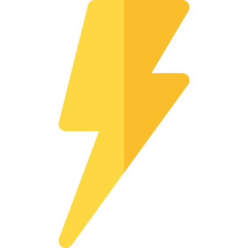

Electrosuelo
La solución más efectiva a la resistividad de los suelos
NUESTRO PRODUCTO
La finalidad del tratamiento de los suelos en la instalación de us sistena de puesta a tierra (SPT), es asegurar la menor resistencia al paso de cualquier corriente de falla, sin correr los electrodos y demás elementos del sistema.
“Electrosuelo Activado” Producto natural activado con químicos y minerales, que posee extraordinarias cualidades mejorando las condiciones del suelo en el cual se aplique, disipando las corrientes de falla del sistema. Su composición es amigable con el medio ambiente..
BENEFICIOS
 Sistema que permite eliminar las sobretensiones y las corrientes estáticas
Prevenir contra accidentes por corrientes transitorias, descargas eléctricas y corrientes de falla
Permite cumplir con los requerimientos de aterrizaje para sub estaciones eléctricas (RETIE)